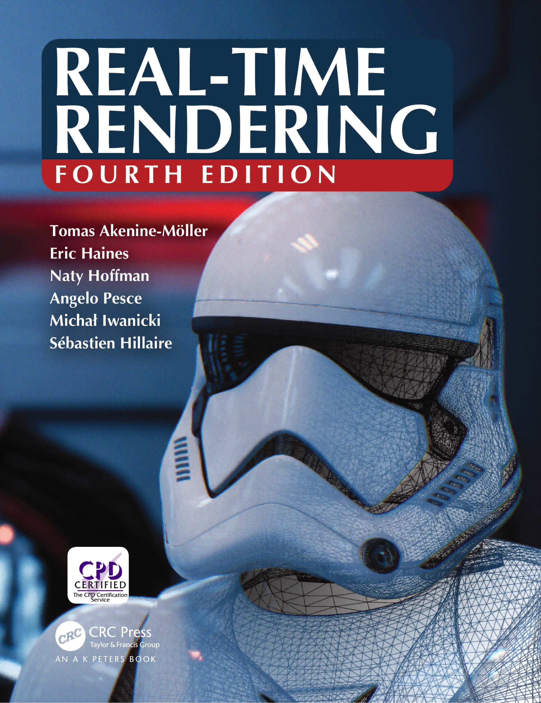

Chapter 0 前言

实时渲染第四版
关于本书
英文名称：《Real-Time Rendering, Fourth Edition》
原作者：Tomas Akenine-Moller, Eric Haines, Naty Hoffman, Angelo Pesce, Michal lwanicki, Sebastien Hillaire
翻译者：Morakito
最新版本：v1.1
更新时间：2025.3.12
内容简介：本翻译版涵盖了RTR4中的第1章-第26章中的内容。附录内容详见在线网站，参考文献目录详见参考文献网站和参考文献合集，已涵盖勘误内容（包含significant errors和minor errors，截止到2025.1.22）。由于本人才疏学浅，翻译难免有误，望各位不吝惜指正。本翻译仅供交流学习，如有侵权，请联系删除。
阅读建议：
- 推荐使用在线阅读（勘误及时、排版美观、跳转方便）：https://www.wolai.com/fkGSwxLu2pjWD7kiBY1V7W
相关链接
- EPUB 格式文件
序言
（下文来自毛星云的自序，共勉）
All our dreams can come true, if we have thecourage to pursue them.
沃尔特·迪斯尼——我们所有的梦想都可以成真，只要我们有勇气去追求它们。
依稀记得那还是F4红遍大街小巷，满城都飘扬着《流星雨》的年代。
那个时候的电子游戏，无论是投币式的街机游戏，还是网吧里的《反恐精英》、《流星蝴蝶剑》、《仙剑奇侠传》、《星际争霸》、《帝国时代》等引领时代的游戏界的璀璨明珠，总能深深地吸引住每个纯真无邪孩童的心，绚烂的游戏画面总是让孩童们流连忘返。
那个时候，每次放学后唯一单纯的想法，就是悄悄溜到学校附近的网吧，和电脑游戏亲密接触。口袋里有零花钱的时候就能玩上一会儿，没有零花钱的时候就痴痴地站在屏幕前面看别人操纵着荧幕前的剑侠闯荡世界。年少的我单纯地认为，游戏世界中存在着一个无比恢弘的世界，那是可以装下梦想的地方。应该是我对游戏的痴迷，对游戏开发梦想的虔诚，让我走向了研习游戏开发的这条道路。
还记得那个香樟树覆盖的夏天，年幼无知的我在一帮同学中吹牛说：我长大后，一定要自己开发出比这些还牛还要好玩的游戏。
现在想想，这几年走过的路途，真应了那句话，“现在的努力，都是为了小时候吹过的牛逼”。
这些年来，在学习游戏编程的道路上有过惊喜，有过坎坷，有过自豪，有过怅惘，走了不少弯路，也算是最终走上了正途，小有所成。于是，我单曲循环着五月天的《有些事情现在不做一辈子都不会做了》，打开Word，打开Visual Studio，把自己这么多年来的游戏开发经验和心得用文字凝聚起来，开始为大家写这本书。
而这么一写，就是一整年。
经过一年夙兴夜寐，终于，赶在22岁生日之前，近百万字的书稿随着一声响指而初具雏形。
“谨以此书献给父母，因养育之恩无以回报。谨以此书献给母校南京航空航天大学和乌克兰国立航空航天大学，因赐予我一颗不甘平庸、上下求索的心。谨以此书献给所有怀揣游戏开发梦想的人们，因为，你们不是一个人在战斗。”
当在书稿的开头写下这三个“谨以”的时候，我终于开始觉得，这一年的夜以继日，这一年的披星戴月，都是值得的。
然而，因为岁月积累的关系，这本书中渗透的编程思想或许不能和编程界中的泰斗们同日而语。但是，我可以捂着胸口问心无愧地说，我把这些年自己悟出来的关于游戏编程的学习方法和真知灼见，毫无保留地呈现给了大家。大家能看到的眼前的这些句子和代码，全都是经过一遍又一遍的深思熟虑，一遍又一遍的修改，然后小心谨慎地敲出来的。
详细研究过游戏编程的朋友们都应该有这样的共识：“中国人写的书水平上不去，外国人写的书水平有了，但是翻译得往往都强差人意，理解不了”。也许正是这个原因，国内游戏编程的入门门槛一直很高，DirectX一直被人们认为是很难学的。很多怀揣游戏开发梦想的热血青年们，信誓旦旦地开始着手学习游戏编程的时候，却被晦涩难懂的游戏编程教材拒之梦想门外，碰了一鼻子灰，从此和最初的梦想失之交臂。我想，这正是导致国产游戏业界的萎靡，国产游戏一直很难成长起来的原因之一。
在这样的环境的激励下，这本倾注我一年多心血的书出现了，它的创作初衷便是渴望能够改变这样的现状。
愿这本书，能帮到那些热爱游戏编程、怀揣游戏开发梦想，却苦于难以入门的人们，让他们少走弯路。
愿这本书，能为国产游戏、国产游戏引擎的崛起，开启一扇门，迎接新的黎明。
我有一个梦想，将来的某一天，大家都能玩到蕴含着中国上下五千年本土文化的优质游戏大作。
我有一个梦想，有一天，西游记能出ACT，让老外去体会中国文化西游记中”斗战胜佛”的打击快感，那一定比西方的动作巅峰之作《战神》、《鬼泣》更加深邃。
我有一个梦想，有一天，上海滩能出沙盒游戏，而不是玩《GTA》感受美国梦，亦或是玩着《热血无赖》体验国外公司强行塞给我们的“中国文化”。
我有一个梦想，有一天，不少3A大作不需要汉化，因为是我们自己的游戏，配音是中文，文化也是中国的。
我有一个梦想，将来的某一天，国产游戏能像中国的其他产业一样，以一个领跑者的姿态，面对全世界，面对全宇宙，器宇轩昂，扬眉吐气。
这会是由我们一起去完成的梦想。
我等着我们的好消息。
浅墨 2013年5月于乌克兰
希望我们可以一起努力，翻过那座山。
目录
Chapter 1 Introduction 简介
1.1 内容概述
1.2 符号和定义
1.2.1 数学符号
1.2.2 几何定义
1.2.3 着色
Chapter 2 The Graphics Rendering Pipeline 图形渲染管线
2.1 渲染管线的架构
2.2 应用阶段
2.3 几何处理阶段
2.3.1 顶点着色
2.3.2 可选的顶点处理
2.3.3 裁剪
2.3.4 屏幕映射
2.4 光栅化阶段
2.4.1 三角形设置
2.4.2 三角形遍历
2.5 像素处理阶段
2.5.1 像素着色
2.5.2 合并
2.6 回顾整个管线
应用阶段
几何处理阶段
光栅化阶段
像素处理阶段
总结（Conclusion)
Chapter 3 The Graphics Processing Unit 图形处理单元
3.1 数据并行结构
3.2 GPU 管线概述
3.3 可编程着色器阶段
3.4 可编程着色及其API的演变
3.5 顶点着色器
3.6 曲面细分阶段
3.7 几何着色器
3.7.1 流式输出
3.8 像素着色器
3.9 合并阶段
3.10 计算着色器
Chapter 4 Transform 变换
4.1基本变换
4.1.1 平移
4.1.2 旋转
示例：绕某个点旋转
4.1.3 缩放
示例：按任意方向进行缩放
4.14 剪切
4.1.5 变换的连接
4.1.6 刚体变换
示例：调整相机的朝向
4.1.7 法线变换
4.1.8 计算逆矩阵
4.2 特殊的矩阵变换和操作
4.2.1 欧拉变换
4.2.2 从欧拉变换中提取参数
示例：约束变换
4.2.3 矩阵分解
4.2.4 绕任意轴旋转
4.3 四元数
4.3.1 数学背景
4.3.2 四元数变换
矩阵转换
球面线性插值
将一个向量旋转到另一个向量
4.4 顶点混合
4.5 变形
4.6 几何缓存回放
4.7 投影
4.7.1 正交投影
4.7.2 透视投影
Chapter 5 Shading Basics 着色基础
5.1 着色模型
5.2 光源
5.2.1 方向光
5.2.2 精确光源
点光源/泛光灯
聚光灯
其他精确光源（Other Punctual Lights）
5.2.3 其他光源类型
5.3 实现着色模型
5.3.1 计算频率
5.3.2 实现示例
5.3.3 材质系统
5.4 锯齿和抗锯齿
5.4.1 采样和滤波理论
重建
重采样
5.4.2 基于屏幕的抗锯齿
采样模式
形态学方法（Morphological Methods）
5.5 透明度，Alpha，合成
5.5.1 混合顺序
5.5.2 顺序无关的透明度算法
5.3.3 Alpha预乘与合成
5.6 显示编码
Chapter 6 Texturing 纹理
6.1 纹理管线
6.1.1 投影函数
6.1.2 转换函数
6.1.3 纹理值
6.2 图像纹理
6.2.1 放大
6.2.2 缩小
Mipmap
SummedArea表（SAT）
无约束的各向异性过滤
6.2.3 体积纹理
6.2.4 立方体贴图
6.2.5纹理表示
6.2.6纹理压缩
6.3 程序化纹理
6.4 纹理动画
6.5 材质映射
6.6 Alpha映射
6.7 凹凸映射
6.7.1 Blinn方法
6.7.2 法线映射
6.8 视差映射
6.8.1 视差遮挡映射
6.9 纹理光源
Chapter 7 Shadows 阴影
7.1 平面阴影
7.1.1投影阴影
7.1.2 软阴影
7.2 曲面上的阴影
7.3 阴影体算法
7.4 阴影贴图
7.4.1 分辨率增强
7.5 PCF
7.6 PCSS
7.7 过滤阴影贴图
7.8 体积阴影技术
7.9 不规则zbuffer
7.10 其他应用
Chapter 8 Light and Color 光与颜色
8.1 光量
8.1.1 辐射度量学
8.1.2 光度学
8.1.3 色度学
8.1.4 使用RGB颜色进行渲染
8.2 从场景到屏幕
8.2.1 HDR显示编码
8.2.2 色调映射
色调再现变换
曝光
8.2.3 颜色分级
Chapter 9 Physically Based Shading 基于物理的着色
9.1 光的物理学
9.1.1 粒子
9.1.2 介质
9.1.3 表面
9.1.4 次表面散射
9.2 相机
9.3 The BRDF
9.4 光照（Illumination）
9.5 菲涅尔反射
9.5.1 外反射
9.5.2 典型的菲涅尔反射值
电介质的菲涅尔反射率
金属的菲涅尔反射率
半导体的菲涅尔反射值
水中的菲涅尔反射率
参数化的菲涅尔值
9.5.3 内反射
9.6 微观几何（Microgeometry）
9.7 微表面理论
9.8 表面反射的BRDF模型
9.8.1 法线分布函数
各项同性法线分布函数
各项异性法线分布函数
9.8.2 多次反弹的表面反射
9.9 次表面散射的BRDF模型
9.9.1 次表面反照率
9.9.2 次表面散射和粗糙的尺度
9.9.3 光滑表面的次表面模型
9.9.4 粗糙表面的次表面模型
9.10 布料的BRDF模型
9.10.1 经验布料模型
9.10.2 微表面布料模型
9.10.3 微圆柱体布料模型
9.11波动光学的BRDF模型
9.11.1 衍射模型
9.11.2 薄膜干涉模型
9.12 分层材质
9.13 混合和过滤材质
9.13.1过滤法线与法线分布
Chapter 10 Local Illumination 局部光照
10.1 面光源
10.1.1 光泽材质
10.1.2 一般光源形状
10.2 环境光照
10.3 球面函数和半球函数
10.3.1简单表格形式
10.3.2 球面基底
球面径向基函数
球面高斯函数
球谐函数
其他球面表示
10.3.3 半球基底
AHD基底
辐射法向映射/《半条命2 》基底
半球谐波/HBasis
10.4 环境映射
10.4.1 经纬度映射
10.4.2 球面映射
10.4.3 立方体映射
10.4.4 其他投影方法
10.5 基于图像的高光照明
10.5.1 预过滤环境映射
卷积环境贴图
10.5.2 微表面BRDF的分裂积分近似
10.5.3 不对称和各向异性波瓣
10.6 irradiance环境映射
10.6.1 球谐irradiance
10.6.2 其他表示方法
10.7 误差来源
Chapter 11 Global Illumination 全局光照
11.1 渲染方程
11.2 通用全局光照
11.2.1 辐射度
11.2.2 光线追踪
11.3 环境光遮蔽
11.3.1 环境光遮蔽理论
11.3.2 可见性和obscurance
11.3.3 考虑相互反射
11.3.4 预计算环境光遮蔽
11.3.5 环境光遮蔽的动态计算
11.3.6 屏幕空间方法
11.3.7 使用环境光遮蔽进行着色
11.4 定向遮蔽
11.4.1 预计算定向遮蔽
11.4.2 定向遮蔽的动态计算
11.4.3 使用定向遮蔽进行着色
11.5 漫反射全局光照
11.5.1 表面预照明（Surface Prelighting）
11.5.2 定向表面预照明
11.5.3 预计算传输
11.5.4 存储方法
11.5.5 动态漫反射全局光照
11.5.6 光照传播体积
11.5.7 基于体素的方法
11.5.8 屏幕空间方法
11.5.9 其他方法
11.6 镜面全局光照
11.6.1 局部环境贴图
11.6.2 环境贴图的动态更新
11.6.3 基于体素的方法
11.6.4 平面反射
11.6.5 屏幕空间方法
11.7 统一方法
Chapter 12 ImageSpace Effects 图像空间特效
12.1 图像处理
12.1.1 双边滤波
12.2 重投影技术
12.3 镜头光晕和泛光
12.4 景深
12.5 运动模糊
Chapter 13 Beyond Polygons 超越多边形
13.1 渲染频谱
13.2 固定视图效果
13.3 天空盒
13.4 光场渲染
13.5 Sprite和图层
13.6 广告牌技术
13.6.1 屏幕对齐（screenaligned）的广告牌
13.6.2 面向世界（world oriented）的广告牌
13.6.3 轴向广告牌
13.6.4 Impostor
13.6.5 广告牌表示
13.7 位移技术
13.8 粒子系统
13.8.1 粒子着色
13.8.2 粒子模拟
13.9 点渲染
13.10 体素
13.10.1 应用
13.10.2 体素存储
13.10.3 体素的生成
13.10.4 体素的渲染
13.10.5 其他主题
Chapter 14 Volumetric and Translucency Rendering 体积与半透明渲染
14.1 光线散射理论
14.1.1 参与介质材质
14.1.2 透光率
14.1.3 散射事件
14.1.4 相位函数
瑞利散射
米氏散射
几何散射
14.2 特殊的体渲染
14.2.1 大规模雾
14.2.2 简单的体积光
14.3 通用的体渲染
14.3.1 体积数据可视化
14.3.2 参与介质渲染
14.4 天空渲染
14.4.1 天空和空气透视
14.4.2 云
将云作为粒子
将云作为参与介质
多重散射的近似
云与大气的相互作用
14.5 半透明表面
14.5.1 覆盖率和透光率
14.5.2 折射
14.5.3 焦散和阴影
14.6 次表面散射
14.6.1 环绕光照
14.6.2 法线模糊
14.6.3 预积分皮肤着色
14.6.4 纹理空间扩散
14.6.5 屏幕空间扩散
14.6.6 深度贴图技术
14.7 毛发和皮毛
14.7.1 几何和Alpha
14.7.2 毛发
14.7.3 皮毛
14.8 统一方法
Chapter 15 NonPhotorealistic Rendering 非真实感渲染
15.1 卡通着色
15.2 轮廓渲染
15.2.1 基于法线的contour边缘着色
15.2.2 程序化的几何Silhouette
15.2.3 基于图像处理的边缘检测
15.2.4 几何contour边缘检测
15.2.5 隐藏线移除
15.3 笔触表面风格化
15.4 线条
15.4.1渲染三角形边缘
15.4.2 渲染遮挡线条
15.4.3 光晕
15.5 文本渲染
Chapter 16 Polygonal Techniques 多边形技术
16.1 三维数据的来源
16.2 曲面细分和三角形划分
16.2.1 着色问题
16.2.2 边界开裂和T顶点
16.3 整合
16.3.1 合并
16.3.2 定向
16.3.3 实体性
16.3.4 法线平滑和折痕边缘
16.4 三角形扇，三角形带和三角形网格
16.4.1 三角形扇
16.4.1 三角形带
16.4.3 三角形网格
16.4.4 缓存无关的网格布局
16.4.5 顶点和索引缓冲区/数组
16.5 简化
16.5.1 动态简化
16.6 压缩和精度
Chapter 17 Curves and Curved Surfaces 曲线和曲面
17.1 参数化曲线
17.1.1 Bezier曲线
使用Bernstein多项式的Bezier曲线
有理Bezier曲线
17.1.2 GPU上的有界Bezier曲线
17.1.3 曲线的连续性与分段Bezier曲线
17.1.4 三次Hermite插值
17.1.5 KochanekBartels曲线
17.1.6 B样条
17.2 参数化曲面
17.2.1 Bezier面片
有理Bezier面片
17.2.2 Bezier三角形
17.2.3 连续性
17.2.4 PN三角形
17.2.5 Phong曲面细分
17.2.6 B样条曲面
17.3 隐式表面
17.4 细分曲线
17.5 细分表面
17.5.1 Loop细分
17.5.2 CatmullClark细分
17.5.3 分段平滑细分
17.5.4 位移（Displaced ）细分
17.5.5 法线、纹理和颜色插值
17.6 高效曲面细分
17.6.1分数曲面细分
17.6.2自适应曲面细分
终止自适应曲面细分
分割和骰子方法
17.6.3 快速CatmullClark曲面细分
近似方法
特征自适应细分和OpenSubdiv
自适应四叉树
Chapter 18 Pipeline Optimization 管线优化
18.1 分析和调试工具
18.2 定位性能瓶颈
18.2.1 应用阶段测试
18.2.2 几何处理阶段测试
18.2.3光栅化阶段测试
18.2.4像素处理阶段测试
18.2.5 合并阶段测试
18.3 性能测量
18.4 优化
18.4.1 应用阶段
内存问题
18.4.2 API调用
状态改变
合并和实例化
18.4.3 几何处理阶段
18.4.4 光栅化阶段
18.4.5 像素处理阶段
18.4.6 帧缓冲技术
18.4.7 合并阶段
18.5 多处理
18.5.1 多处理器流水线
18.5.2 并行处理
18.5.3 基于任务的多处理
18.5.4 图形API的多处理支持
Chapter 19 Acceleration Algorithms 加速算法
19.1 空间数据结构
19.1.1 层次包围体
19.1.2 BSP树
轴对齐的BSP树（kD树）
多边形对齐的BSP树
19.1.3 八叉树
19.1.4 缓存无关和缓存感知的表示
19.1.5 场景图
19.2 剔除技术
19.3 背面剔除
19.4 视锥体剔除
19.5 入口剔除
19.6 细节剔除和小三角形剔除
19.7 遮挡剔除
19.7.1 遮挡查询
19.7.2 层次Z缓冲
19.8 剔除系统
19.9 LOD
19.1.1 LOD切换
离散几何LOD
混合LOD
Alpha LOD
CLOD和地貌LOD
19.9.2 LOD选择
基于范围
基于投影面积
其他选择方法
19.9.3 限时的LOD渲染
19.10 渲染大型场景
19.10.1 虚拟纹理和流式传输
19.10.2 纹理转码
19.10.3 通用流式传输
19.10.4 地形渲染
Chapter 20 Efficient Shading 高效着色
20.1 延迟着色
20.2 贴花渲染
20.3 分块着色（Tiled Shading）
20.4 聚类着色（Clustered Shading）
20.5 延迟纹理
20.6 对象空间和纹理空间着色
Chapter 21 Virtual and Augmented Reality 虚拟现实和增强现实
21.1 设备和系统概述
21.2 物理元素
21.2.1 延迟
21.2.2 光学
21.2.3 立体视觉
21.3 API和硬件
21.3.1 立体渲染
21.3.2 注视点渲染
21.4 渲染技术
21.4.1 抖动
21.4.2 计时
Chapter 22 Intersection Test Methods 相交测试方法
22.1 GPU加速的拾取
22.2 定义和工具
22.3 创建包围体
22.3.1创建AABB和kDOP
22.3.2 创建球体
22.3.3 创建凸多面体
22.3.4 创建OBB
22.4 几何概率
22.5 经验法则
22.6 射线/球体相交
22.6.1 数学解法
22.6.2 优化解法
22.7 射线/Box相交
22.7.1 平板法
22.7.2 射线斜率法
22.8 射线/三角形相交
22.8.1 相交算法
22.8.2 实现
22.9 射线/多边形相交
22.9.1 交叉点测试
22.10 平面/Box相交
22.10.1 AABB
22.10.2 OBB
22.11 三角形/三角形相交
22.12 三角形/Box相交
22.13 BV/BV相交
22.13.1球体/球体相交
22.13.2 球体/Box相交
22.13.3 AABBAABB相交
22.13.4 kDOP/kDOP相交
22.13.5 OBB/OBB交集
22.14 视锥体相交测试
22.14.1 提取视锥体平面
22.14.2 视锥体/球体相交
22.14.3 视锥体/box相交
22.15 线/线相交
22.15.1 二维
方法1
方法2
22.15.2 三维
22.16 三平面相交
Chapter 23 Graphics Hardware 图形硬件
23.1 光栅化
23.1.1 插值
23.1.2 保守光栅化
23.2 大规模计算和调度
23.3 延迟和占用率
23.4 内存架构和总线
23.5 缓存和压缩
23.6 颜色缓冲
23.6.1 视频显示控制器
23.6.2 单、双、三重缓冲
23.7 深度剔除、测试和缓冲
23.8 纹理化
23.9 架构
23.10 案例分析
23.10.1 案例研究：ARM Mali G71 Bifrost
23.10.2 案例研究：NVIDIA Pascal
23.10.3 案例研究：AMD GCN Vega
23.11 光线追踪架构
Chapter 24 The Future 未来
24.1 其他事项
24.2 你
Chapter 25 Collision Detection 碰撞检测
25.1 宽阶段碰撞检测
25.1.1 扫描剪枝算法
25.1.2 网格
25.1.3 层次包围体
25.2 中阶段碰撞检测
25.2.1 BVH构建
25.2.2 BVH间的碰撞测试
25.2.3 BVH成本函数
25.2.4 OBB树
选择包围体
建立层次结构
处理刚体运动
其他
25.3 窄阶段碰撞检测
25.3.1 图元vs图元
25.3.2 距离查询
25.4 射线碰撞检测
25.5 使用BSP树的动态CD
25.6 限时碰撞检测
25.7 可变形模型
25.8 连续碰撞检测
25.9 碰撞响应
25.10 粒子
25.10.1 粒子系统
25.10.2 粒子的物理模拟
25.11 动态相交测试
25.11.1球体/平面
25.11.2球体/球体
25.11.3 球体/多边形
25.11.4 动态分离轴方法
Chapter 26 RealTime Ray Tracing 实时光线追踪
26.1 光线追踪基础
26.2 光线追踪着色器
26.3 顶层和底层加速结构
26.4 一致性
26.4.1 场景一致性
空间数据结构的属性
构造方案
遍历方案
26.4.2 光线和着色的一致性
26.5 降噪
26.6 纹理过滤
26.7 推测